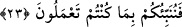

olması da imkansız değildir. Çünkü dalgaların sadece rüzgarın estiği yönden gelmiş
olması gerekmez. Bilakis uygun sebeplere göre başka cihetlerden de gelebilir. Kaşifî de
“Yani sağdan, soldan, önden ve arkadan” derken bu görüşe meyletmiştir.
“ve onlar çepeçevre kuşatıldıklarını anlarlar” helak olacaklarını. Çünkü bu durum
helak durumunda olur. Bu söz aslında düşmanın mahalleyi kuşatması anlamındadır.
“dini yalnız Allah’a halis kılarak:” ilahlarından hiçbirini ona şirk koşmaksızın
yalvarırlar. Çünkü dini halis kılmak ve Allah’a itaat etmek, şirki terk etmekten ibarettir.
Bu durumda onların dini hâlis kılmaları, îmândan kaynaklanmaz. Bilakis ıztırârî îmân
yerine geçer.
Bâzılarına göre onların duâlarından maksad “Âheyyâ şerâheyyâ” demeleridir. Bunun
mânâsı “Ya Hayy, ya Kayyûm!” demektir. Bu iki isim Âyetü’l-kürsi tefsirinde geçtiği
gibi denizde yapılacak evrâddandır.
“Andolsun eğer bizi bundan” bu vartadan “kurtarırsan” nimetlerine “mutlaka
şükredenlerden olacağız” “diye Allah’a yalvarırlar.” Yani, “Vallahi eğer bizi bundan
kurtarırsan…” diyerek dua ederler.
Şükredeceklerini söyledikleri nimetlerden birisi de istedikleri bu kurtulma nimetidir.
Bu ise: “Emirlerine uyarak, gazab ettiğin şeylerden kaçarak yapacağız. Başkalarına
kulluk ederek nimetine nankörlük etmeyeceğiz.” demektir.
23. Allah onları kurtarınca birde bakarsın ki hemen yeryüzünde haksız yere
taşkınlıklara başlarlar. Ey insanlar, sizin taşkınlığınız kendi aleyhinizedir;
(bununla) sadece fâni dünya hayatının menfaatini elde edersiniz; sonunda
dönüşünüz yine bizedir. Biz de size yapageldiklerinizi bir bir haber vereceğiz.
“Allah onları kurtarınca” duâlarını kabul edip kendilerini bürüyen sıkıntıdan
kurtarınca “bir de bakarsın ki hemen yeryüzünde haksız yere taşkınlıklara başlarlar.”
Yani onlar hemen taşkınlığa dalar ve önceden içinde bulundukları inkâr, şirk ve Allah’a
karşı cür’etkârlığa koşarlar.
Âyette “yeryüzünde” kelimesinin ilâve edilmesi, onların taşkınlığının yeryüzünün her
tarafına ulaştığını ifade etmek içindir.
“Haksız yere”, haksızlığa yapışarak, tutunarak demektir. Kâşifî şöyle der: “Bu ifâde
te’kid içindir. Yâni onların fesadları haksız yeredir. Onlar yaptıkları amelin bâtıl olduğu
inancında değildirler.” Şu halde bu ifâde Allah Teâlâ’nın “Haksız yere